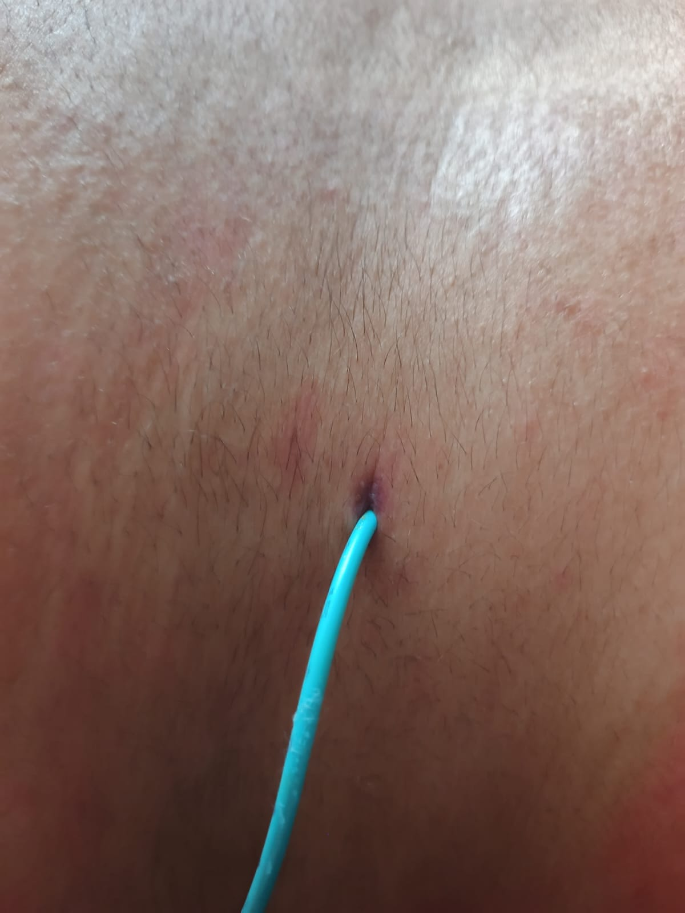
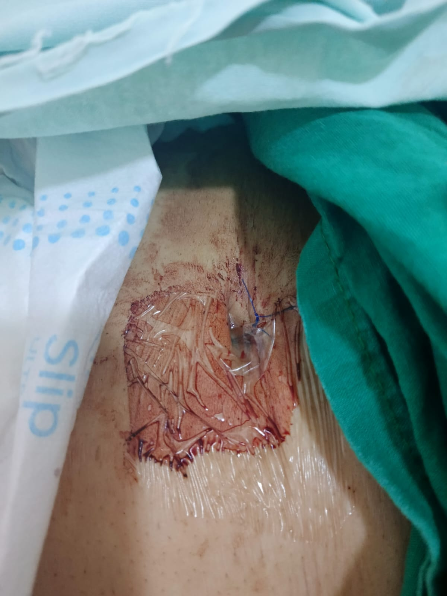

Publicado por Juan Carlos Flórez
Cuando mi dolor no fue escuchado
Mi experiencia en el Hospital Infantil Universitario de San José


Testimonio sobre nefrostomía y atención en el Hospital San José
Mi nombre es Rocío del Pilar Moreno Lozano. El día de hoy, más que presentar una queja por una complicación quirúrgica, quiero manifestar mi profunda inconformidad frente a la falta de humanidad con la que fui tratada durante una atención en salud en el Hospital Infantil Universitario de San José.
Lo que más me duele no es únicamente la complicación médica. Lo que más me duele es la indiferencia, la omisión y la forma en que una persona vulnerable, con dolor y pidiendo ayuda, puede terminar sintiéndose ignorada dentro de una institución que debería cuidar la vida con dignidad.
Ingresé a salas de cirugía el 18 de febrero para la realización de una histerectomía y salpinguectomía. Desde el inicio encontré inconsistencias en mi historia clínica: datos que no corresponden a la forma real en que ingresé, cifras de tensión arterial elevadas que recuerdo claramente y que no aparecen registradas, antecedentes médicos que no tengo, e incluso información errada sobre mi acompañante de egreso.
Durante todo el tiempo que estuve en salas de recuperación no tuve seguimiento por parte de la profesional que me operó. Mi acompañante tampoco tuvo contacto con ella ni recibió información clara sobre cómo había transcurrido el procedimiento. En un momento en el que tanto el paciente como su familia necesitan orientación, tranquilidad y explicaciones claras, sentimos ausencia de acompañamiento e información oportuna.
Para algunas personas estos pueden parecer detalles menores, pero en salud los registros clínicos, el seguimiento posterior a un procedimiento y la comunicación con el paciente y su familia son parte fundamental de la seguridad del paciente y de la verdad sobre lo ocurrido.
Al despertar en recuperación, el anestesiólogo me preguntó por mi dolor. Le indiqué que era de 9 sobre 10. Me administraron medicamento y el dolor bajó a 3. Sin embargo, cerca de dos horas después, el dolor volvió de forma insoportable. Lloraba, pedía ayuda, y la respuesta que recibía del personal de enfermería era que eso era normal por la cirugía y que también podía deberse a que no había ido al baño.
Cuando manifesté nuevamente el dolor, el personal de enfermería insistió en que podía deberse a que no había orinado. Por esa razón solicitaron el ingreso de mi acompañante, mi esposo, para que me ayudara a ir al baño. Allí presenté sangrado y también vómito secundario al dolor. Para mí, estos signos no debieron pasarse por alto, especialmente teniendo en cuenta el dolor intenso que estaba sintiendo.
A pesar de eso, sentí que hicieron caso omiso. La respuesta de la jefe de salas de recuperación seguía siendo que era algo normal por el procedimiento. Mi voz de auxilio no fue escuchada. Pedí que alguien me valorara. Incluso dije que, si era necesario, yo pagaba una valoración particular, pero tampoco obtuve una respuesta oportuna.
Lo más doloroso fue sentir que un protocolo administrativo fue puesto por encima de mi salud, mi dolor y mi vida.
Que una historia clínica estuviera “cerrada” no podía ser una razón suficiente para dejar de atender un dolor intenso, persistente y fuera de lo normal. Ningún trámite interno debería pesar más que la obligación ética y humana de valorar, escuchar y proteger a una persona que está pidiendo ayuda.
Más tarde, en medio de mi dolor, llegó la ginecóloga de turno junto con la residente. Me realizaron una valoración médica y me indicaron que no había signos de irritación peritoneal. Antes de esa valoración, a mi esposo le habían dicho que comprara medicamentos, como acetaminofén, para ver si el dolor disminuía. Es triste que en un hospital, en medio de un dolor tan fuerte, no pudieran darme ni siquiera una pastilla porque, según me repetían, la historia clínica ya estaba cerrada desde el momento en que entré a cirugía.
Después de la valoración médica, me indicaron que, si yo deseaba, debía salir e ingresar nuevamente por urgencias. En ese momento, agotada, con dolor y sin sentir una respuesta real frente a lo que estaba viviendo, decidí irme a mi casa.
En casa el dolor continuó, acompañado de vómito constante, a pesar de usar medicamentos como diclofenaco intramuscular, naproxeno y acetaminofén. Al día siguiente tuve que ingresar nuevamente a urgencias porque el dolor no mejoraba; por el contrario, empeoraba.
Llegué aproximadamente a las 6:00 a. m. En triage me encontraron con taquicardia y tensión arterial algo elevada, por lo que solicitaron mi ingreso a urgencias de ginecología. Mientras esperaba, no encontraba ninguna posición que me aliviara el dolor: no podía estar sentada, de pie ni acostada.
Le dije a una enfermera: “Jefe, ayúdeme, tengo mucho dolor”. Su respuesta fue: “Pues espere a que el médico la vea”.
También quiero reconocer que hubo profesionales que sí actuaron con humanidad. La ginecóloga y los estudiantes que me atendieron lo hicieron con paciencia, cariño y respeto. Ellos sí me escucharon. Sin embargo, al salir de esa valoración, cuando la médica indicó que debía hospitalizarme, escuché una respuesta que me marcó: “¿Y es que hoy está hospitalizado todo?”.
Luego me indicaron que debía retirarme la ropa interior y quedarme solo con la bata. Expliqué que tenía salida abundante de líquido y que necesitaba conservar mi ropa interior. La doctora indicó que no había problema, pero la situación generó un disgusto evidente en la persona encargada. Más tarde, al estar mojada y necesitar cambiarme, tuve que pedir casi rogando que permitieran subir a mi acompañante.
Sobre las 11:20 a. m. me canalizaron, pero no me pasaron líquidos ni medicamentos. Al preguntar si me iban a aplicar algo para el dolor, me respondieron que no aparecía nada en la historia clínica, aunque revisarían nuevamente.
Me llevaron a ecografía transvaginal, ecografía abdominal y posteriormente a otros estudios diagnósticos. Allí debo destacar la calidad humana del ecografista, quien entendió mi dolor y me ayudó con paciencia a acomodarme. Después de los estudios quedé esperando cerca de 40 minutos a que el camillero regresara por mí. Finalmente pasó otra persona, porque quien me había llevado nunca respondió.
Los exámenes realizados durante mi ingreso por urgencias evidenciaron una lesión completa del uréter derecho.
Ese hallazgo cambió por completo la dimensión de lo que estaba viviendo. Mi dolor no era una exageración, no era una simple molestia esperada después de una cirugía, no era algo que pudiera ignorarse porque una historia clínica estuviera cerrada. Había una lesión real, grave, que requería atención.
Para mí, en ese momento no solo se evidenció una lesión: se hizo evidente un hecho grave que exigía una respuesta inmediata, médica y resolutiva. La lesión del uréter derecho ocurrió en el contexto de la cirugía que me realizó la ginecóloga, y por eso considero que no bastaba con reconocer el daño o dejar que el caso siguiera su curso. Quien realizó el procedimiento debía asumir una actitud activa, gestionar de manera urgente las opciones para corregir la lesión, explicar con claridad lo ocurrido y acompañarme como paciente en un momento crítico. Eso no fue lo que percibí. Por el contrario, sentí indiferencia, distancia y falta de compromiso frente a una situación que cambió mi salud y mi vida diaria.
Como consecuencia de esa lesión, tuvieron que realizarme una nefrostomía. Desde entonces vivo con las limitaciones, el miedo, la incomodidad y la carga física y emocional que implica depender de este procedimiento. Ese diagnóstico confirmó algo que yo venía sintiendo desde el inicio: mi cuerpo estaba dando señales de alarma y esas señales no fueron escuchadas a tiempo.
Solo alrededor de la 1:00 p. m. una auxiliar que ingresaba de turno me aplicó por fin diclofenaco intramuscular. Me indicó que no había Tramadol disponible en el hospital y que solicitaría cambio de fórmula. Para ese momento, desde las 6:00 a. m., ese era el primer medicamento que recibía para el dolor.
Posteriormente me realizaron un urotac y luego fui trasladada al cuarto piso. Allí me indicaron que me iban a colocar una sonda vesical. En ese momento me negué a permitir cualquier procedimiento hasta que me administraran medicamentos para el dolor, porque el dolor era insoportable y había aumentado durante los estudios.
Finalmente me medicaron y fui trasladada a habitación. Allí sí encontré un equipo de enfermería, jefes y auxiliares, con amor, disposición, paciencia y verdadera voluntad de ayudar. A ellos solo puedo darles las gracias.
Pero lamentablemente la historia no terminó ahí.
Como consecuencia de la lesión completa del uréter derecho, terminé requiriendo una nefrostomía. Al día de hoy continúo con ella, con todas las limitaciones físicas, emocionales, familiares y económicas que esto implica. Para mí, esta situación debe ser revisada a fondo, porque no se trata solo de una complicación médica: se trata de una cadena de hechos, omisiones, falta de escucha y ausencia de respuesta oportuna frente a signos que no debieron ser ignorados.
No estoy hablando de una molestia pasajera ni de una simple inconformidad. Estoy hablando de que después de un procedimiento salí con dolor insoportable, sin una respuesta oportuna, sin un manejo adecuado del dolor, sin seguimiento claro por parte de quien realizó mi cirugía, con registros clínicos que no reflejan correctamente lo ocurrido, y finalmente terminé con una condición que cambió mi vida diaria.
Desde entonces, todo ha sido difícil: conseguir citas médicas, lograr controles oportunos, insistir por órdenes, pedir incapacidades, explicar una y otra vez mi situación, depender de traslados constantes y asumir gastos que antes no existían.
Cuando solicité una cita con la ginecóloga que me operó, tampoco encontré la respuesta humana y responsable que esperaba. Incluso, frente a la incapacidad que requería, inicialmente no querían otorgarla en las condiciones necesarias. Tuve que alzar la voz, porque no es justo que una persona afectada tenga que estar rogando por una incapacidad, por una cita, por una orden médica o por un seguimiento que debería ser garantizado por la institución.
No debería ser yo, ni mi familia, quienes tengamos que perseguir cada cita y cada trámite. Debería ser el hospital quien, frente a una situación tan delicada, garantice los controles correspondientes, las órdenes necesarias y el acompañamiento adecuado para que las consecuencias de una posible mala praxis sean, al menos, un poco más llevaderas.
A esto se suma la afectación económica. No he podido trabajar con normalidad. Mis ingresos se han visto reducidos, llegando a recibir apenas medio sueldo, mientras los gastos por transporte, medicamentos, trámites, acompañamientos y citas siguen aumentando.
La afectación también ha sido emocional. Vivir con dolor, con una nefrostomía, con incertidumbre sobre mi recuperación, con miedo a nuevas complicaciones y con la sensación de tener que rogar por atención, incapacidades y respuestas, desgasta profundamente. También ha afectado a mi familia, que ha tenido que reorganizar su vida, su economía y su tiempo alrededor de una situación que quizá pudo haberse manejado de otra manera.
Es triste ver cómo mi calidad de vida se deteriora no solo por una complicación médica, sino por la falta de humanidad, seguimiento y responsabilidad de quienes deberían acompañar el proceso. Una institución de salud no debería hacer sentir a un paciente como una carga, mucho menos cuando ese paciente está sufriendo las consecuencias de una atención que debe ser revisada a fondo.
Esta publicación no pretende desconocer que en medicina pueden existir complicaciones, eventos adversos o situaciones clínicas difíciles. Lo que quiero expresar es la forma en que algunos profesionales tratan a una persona cuando está vulnerable, con dolor, asustada y dependiendo completamente del cuidado de otros.
Quizás hubo fallas técnicas en el protocolo, en el egreso seguro, en el registro de la historia clínica, en el manejo del dolor, en la oportunidad de la atención, en el seguimiento posterior o en la comunicación con mi familia. Eso deberá revisarlo quien corresponda. Pero como paciente, mujer y profesional de salud, lo que más me duele es la omisión frente al dolor, la falta de empatía, la ausencia de registros correctos, la falta de información clara y la sensación de abandono después de lo ocurrido.
La atención en salud no puede reducirse a procedimientos, órdenes médicas, turnos o historias clínicas cerradas. Una historia clínica cerrada no puede cerrar también la posibilidad de recibir atención. Un trámite administrativo no puede estar por encima de la salud, la seguridad, la dignidad y la vida de un paciente.
Si una persona está llorando de dolor, vomitando, sangrando y pidiendo ayuda, la respuesta no puede ser que “no se puede hacer nada” porque el sistema o la historia clínica ya fueron cerrados.
Hoy sigo con una nefrostomía. Sigo enfrentando citas, trámites, incapacidades, limitaciones físicas, angustia emocional y afectación económica. Mientras tanto, sigo esperando respuestas claras.
No busco atacar por atacar. Busco verdad, revisión, responsabilidad y humanidad.
Porque ningún paciente debería salir de una institución de salud sintiendo que su dolor fue ignorado. Ninguna familia debería quedar sin información clara después de un procedimiento. Ninguna persona debería tener que rogar por una cita, por una incapacidad, por una orden médica o por una atención digna.
Y ningún hospital debería olvidar que antes de cualquier procedimiento, diagnóstico o historia clínica, hay una vida humana que merece respeto, cuidado y compasión.
Participa
Deja tu comentario o testimonio
Si esta historia te tocó, si has vivido algo similar o quieres dejar un mensaje de apoyo, puedes escribirlo aquí. Los comentarios serán recibidos para su revisión.
Gracias. Tu comentario fue recibido y será revisado.